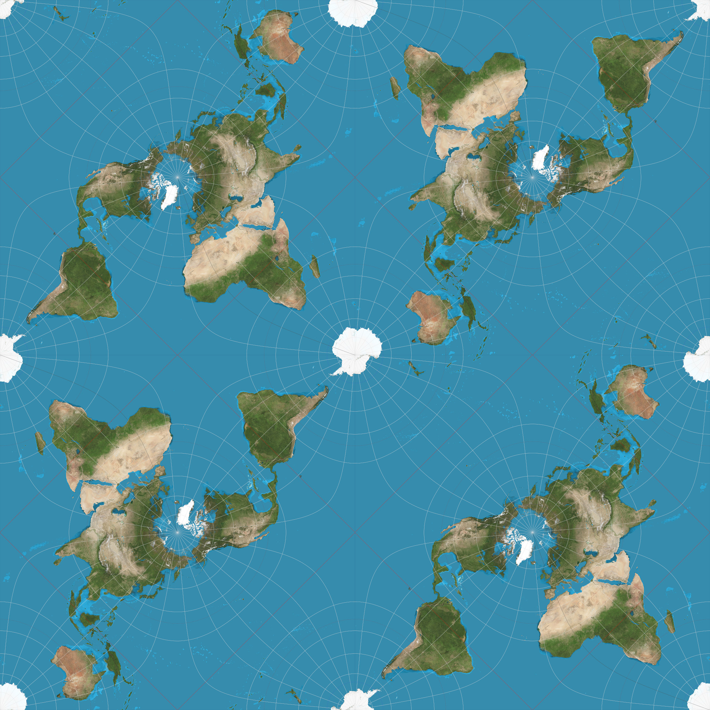

Free Precession
Using Conservation Laws and Modeling to Understand Unexpected Dynamics
- The unexpected behavior of this T-handle is a striking example of free precession - a subject usually covered in upper division Classical Mechanics courses.
- Attempts to explain the dynamics of a spinning rigid body using $F=ma$ such as Tao's are not very satisfactory (see the 2019 update in Tao's post).
- A simple and more correct explanation using conservation of energy and angular momentum leads to a quantitative model of the dynamics.
- The answer turn out to be elliptic functions - relatives of the circular trigonometric functions - which pop up in many wonderful bits of math and physics.
- Velocity $\vb{v} = \vb*{\omega}\times\vb{r}$
- Angular momentum $\vb{L} = \int dm\, \vb{r}\times\vb{v}$
- Energy $E = \frac{1}{2} \int dm\, \vb{v}\cdot\vb{v} = \frac{1}{2} \vb*{\omega}\cdot\vb{L}$
- Since $\vb{L}$ is a linear function of $\vb*{\omega}$, \[ \begin{pmatrix}L_x \\ L_y \\ L_z\end{pmatrix} = \begin{pmatrix}I_{xx} & I_{xy} & I_{xz} \\ I_{yx} & I_{yy} & I_{yz} \\ I_{zx} & I_{zy} & I_{zz}\end{pmatrix} \begin{pmatrix}\omega_x \\ \omega_y \\ \omega_z\end{pmatrix} \]
- Working out the $I_{ij}$ from the definition of $\vb{L}$ you find the moment of inertia matrix is symmetric: \[ I_{xx} = \int dm\, (y^2+z^2),\quad I_{xy} = I_{yx} = -\int dm\, x y,\quad ... \]
- Energy $E = \frac{1}{2} \int dm\, \vb{v}\cdot\vb{v} = \frac{1}{2} \vb*{\omega}\cdot\vb{L}$
- Since $E \geq 0$, $I_{jk}$ is a positive definite matrix
- $I_{ij}$ has three orthogonal directions for which the vectors $\vb{L}$ and $\vb*{\omega}$ are parallel (eigenvectors)
- Assume the $x$, $y$, and $z$ axes are along these principal axes of the body, so \[ (L_x,L_y,L_z) = (I_x\omega_x,I_y\omega_y,I_z\omega_z) \] Also assume $I_x \leq I_y \leq I_z$
- Since the body is spinning, these $(x, y, z)$ axes are rotating - but this is the only way to make the components of $I_{ij}$ constant
- The total angular momentum $L = ||\vb{L}||$ is \[ L^2 = L_x^2 + L_y^2 + L_z^2 \]
- The total kinetic energy $E$ is \[ 2E = L_x^2/I_x + L_y^2/I_y + L_z^2/I_z \]
- Imagine a stationary coordinate frame $(x',y',z')$ to go along with our rotating body frame $(x,y,z)$
- Relative to these primed coordinates, the time rate of change of the coordinates of any vector are \[ \dot{\vb{A}}' = \dot{\vb{A}} + \vb*{\omega}\times\vb{A} \]
- Warning! Don't the vectors $\vb{L}$, $\vb*{\omega}$, and $\vb{v}$ really belong to the stationary primed system? Hint: Yes, but at any single instant of time, we can put $(x',y',z')=(x,y,z)$...
- Conservation of angular momentum is $\dot{\vb{L}}'=0$, or \[ \dot{\vb{L}} = -\vb*{\omega}\times\vb{L} \] That is, $\vb{L}$ in the spinning frame must change so that $\vb{L}'$ stays fixed.
- The components of $\dot{\vb{L}} = -\vb*{\omega}\times\vb{L}$ are the three equations \[ \dot{L}_i = (1/I_k - 1/I_j) L_j L_k = J_{kj} L_j L_k \] where $ijk$ are $xyz$ or cyclic permutations $yzx$ or $zxy$, and $J_{kj} \equiv 1/I_k - 1/I_j.$
- Important checks: $\dot{(L^2)}=2\vb{L}\cdot\dot{\vb{L}}=0$
Using components you can check that $\dot{E}=0$ as well. - In $(L_x,L_y,L_z)$ space, $L^2$ constant is a sphere and $E$ constant is an ellipsoid. The $\vb{L}$ vector can only move along their intersection.
- The three projections into the $xy$, $yz$, and $zx$ planes are just conics: \[ \begin{aligned} J_{xz}L_x^2 + J_{yz}L_y^2 &= 2E - L^2/I_z \\ J_{xy}L_x^2 - J_{yz}L_z^2 &= 2E - L^2/I_y \\ J_{xy}L_y^2 + J_{xz}L_z^2 &= L^2/I_x - 2E \end{aligned} \]
- In the rotating frame, the $\vb{L}$ vector traces some curve on the sphere, depending on the value of $E$.
- When $\vb{L}$ starts very close to any of the principal axes, it changes very slowly since $\dot{\vb{L}}$ is near zero.
- The projections of these paths into the $xy$ and $yz$ planes are ellipses, but the projection into the $zx$ plane is a hyperbola!
- When $\vb{L}$ starts very near the $+y$ axis, its hyperbola eventually takes it to the $-y$ axis. It moves quickly from plus to minus or minus to plus, and slowly when close to either $y$ direction.
Plan (many other possibilities!):
- If $2E \ge L^2/I_y$, choose $k$ to be $z$, otherwise $x$, so that \[ |J_{ik}|L_i^2 + |J_{jk}|L_j^2 = |2E - L^2/I_k| \]
- Step $(L_i, L_j)$ forward in time to second order: \[ \Delta L_i = (\dot{L_i} + \tfrac{1}{2}\ddot{L_i}\Delta t)\Delta t \]
- Renormalize $(L_i, L_j)$ back onto its ellipse to avoid slowly accumulating numerical error.
- Update $L_k$ so that $L^2$ remains unchanged.
- With the model, you can explore changing the various parameters: the moments of inertia $I_i$, and the value of $2E-L^2/I_y$.
- In addition to being positive, the moments of inertia of any real body must satisfy the triangle inequalities $I_i \le I_j+I_k$ for all permutations $ijk$ of $xyz$.
- Pay attention to scaling. For example, you can change your mass and length units to make, say, $I_y=1$. When you do that, $E$ and $L$ scale by the same factor. You can now change your time units to make, say, $L=1$. That doesn't affect any of the $I_i$, but it changes $E$ by the square of that factor.
- No real body is perfectly rigid. When the angular velocity vector changes in body fixed (rotating) coordinates, changing stresses cause the body to flex slightly. This flexing generates a small amount of heat which slowly reduces $E$. You can add ad hoc energy loss terms (say proportional to $|\dot{\vb*{\omega}}|$) to explore how energy loss changes the dynamics.
There is an elegant solution to the equations for $\vb{L}$ involving the Jacobi elliptic functions - doubly periodic analytic functions that generalize trig and exponential functions.
A rigid pendulum with an amplitude near 180 degrees turns out to be an exact analog of the spinning T-handle.

Finally, one of my favorite map projections - the Peirce quincuncial - is based on elliptic functions.